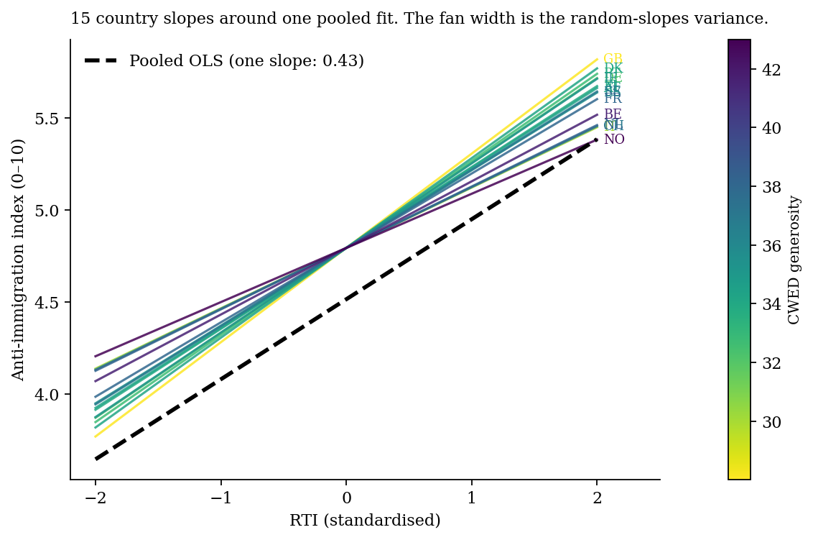
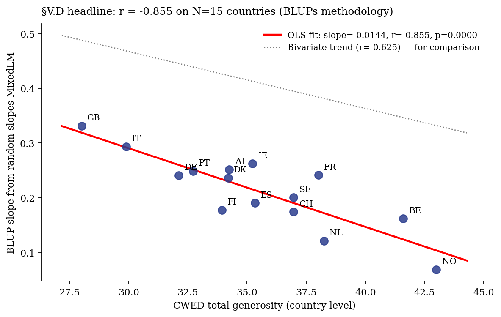
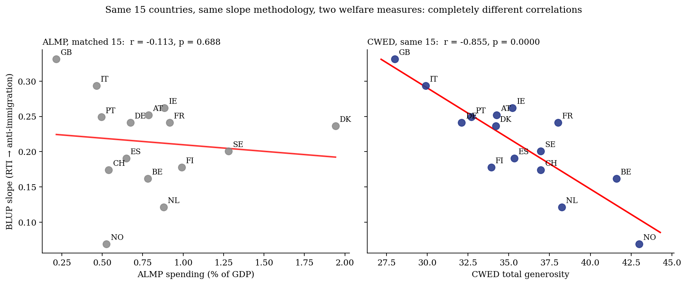
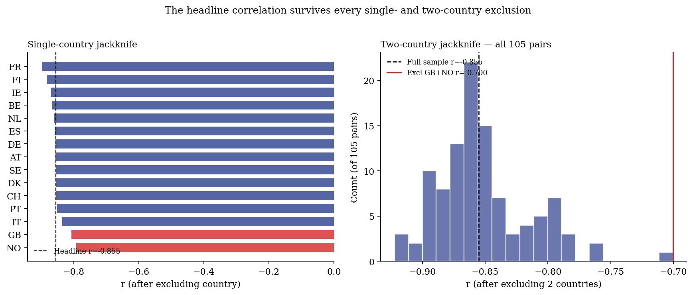
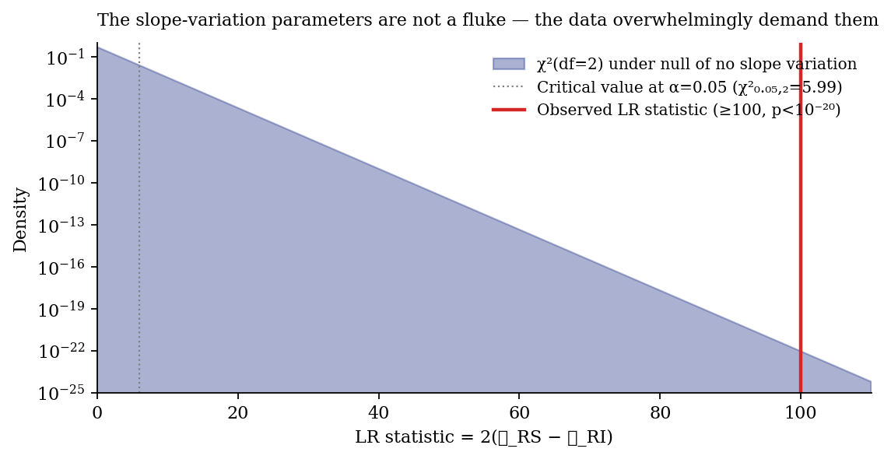
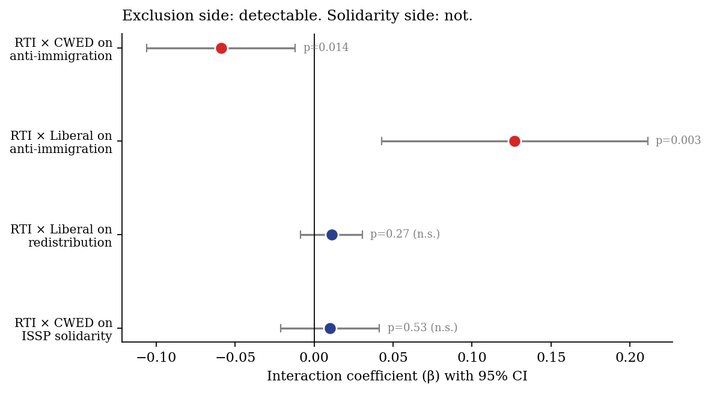

This page collects the three interactive visualisations and eight static figures that underwrite the empirical analysis in §V of the paper. It is intended for the seminar Q&A and for any reader who wants to interrogate the methodological choices directly.
Three methodological decisions in particular are worth seeing rather than reading about, and each has its own interactive below: the cross-level interaction $\beta_3$, the choice of slope estimator for the §V.D country-level scatter (BLUPs vs bivariate OLS), and the cluster-robust standard error correction.
Two panels, side by side. On the left, the predicted RTI-slope as CWED varies — the "fan" interpretation of the cross-level interaction. On the right, the implied regression line of anti-immigration on RTI for low-CWED, average, and high-CWED countries (red, grey, blue). Hover the country dots on the left panel to see where each country sits.
Switch slope methodology and watch the correlation with CWED move from $r=-0.625$ (bivariate per-country OLS) to $r=-0.855$ (BLUPs from a random-slopes mixed model with controls). The published number is the BLUPs version. Hovering any country shows both estimates and the shrinkage gap. The "Both" view connects each country's two estimates with a dashed line, making the shrinkage-plus-partial-out visible country by country.
Heatmap of SE inflation factor across (intra-cluster correlation $\rho$, cluster size $\bar n$). Your paper's actual values appear as a red star. Hover any combination to see "naive SE is X× too small at this combo". Reference cases (classroom data, mild ICC, strong ICC) are marked for context.
Two interactives aimed at the conceptual rather than the methodological layer. These don't appear in the slide deck but are the pieces I'd reach for if someone asks "why a multilevel model rather than just OLS?" or "what does partial pooling actually do?".
Two synthetic countries with very different RTI-to-attitudes slopes (0.55 vs 0.18). A slider controls the gap between their mean attitudes. Drag the slider to zero — the bar chart confirms the means become identical, but the regression lines on the scatter barely move. The slope difference is preserved. Pedagogical point: the welfare-state moderation question is about slopes, not means; the multilevel model's job is to isolate the slope variation that naive comparison invisibly washes away.
Open interactive →Twelve synthetic countries with varying sample sizes and noise levels. Three panels show what each estimator gives you: pure pooling (one global slope), no pooling (separate OLS per country, each weighted equally), and partial pooling (multilevel — small-N countries get shrunk toward the grand mean). A scenario toggle switches between low-noise/large-samples, realistic, and high-noise/small-samples conditions. Watch what happens to the no-pooling lines as data quality drops.
The eight static figures referenced in the methodology backup slides, indexed by concept. Click any thumbnail for the full-resolution version.





